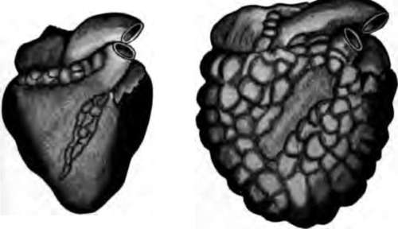

The Blood And Its Passage Through The Body. Part 4
Description
This section is from the book "The Human Body And Health", by Alvin Davison. Also available from Amazon: The Human Body and Health.
The Blood And Its Passage Through The Body. Part 4
Never put tobacco, cobwebs, or any other dirty material on a cut, or seal it shut with court plaster. Catching cold in a cut means getting bacteria into it. Pus is then often formed and lockjaw or blood poisoning may result.
Exercise And Circulation
But few people can remain long in good health without exercising one or two hours daily. Persons who take little exercise often feel tired, suffer from headache, and have a poor appetite. This condition is due largely to the sluggishness in the action of various organs, and to the collection of waste matter in the tissues. Medicine gives no lasting help but exercise is a sure cure for this condition.
Exercise makes the heart more active, stimulates greatly the flow of the lymph, so as to carry off the waste matter and hastens the action of many other organs. Swimming, rowing, ball-playing, walking or chopping wood will do more to maintain a healthy blood supply than any medicine.
Alcohol And The Heart
An unhealthy heart makes a weak body. It has been shown by experiments on animals, as well as by observations on man, that the use of alcohol weakens the heart, causes it to enlarge and changes some of its muscular fibers into fat. It was until lately thought that the heart was stimulated by alcohol, but it is now known that whisky slowly lessens the action of the heart muscle.
It was once customary to give a few swallows of wine or whisky to persons recovering from a fainting or exhausted condition. Lately it has been found that the later lessens the cavity of the tubes, and so makes the heart work harder to get enough blood through the small channels.
Fig. 62. Healthy heart on the left and heart of a beer drinker on the right. The irregular white areas are clumps of fat.
Alcohol And The Blood Vessels
The taking of only one or two tablespoonfuls of whisky will cause the small blood vessels to expand in all parts of the body. Repeated doses of alcohol will keep the blood vessels expanded, and so permit an overcrowding of the blood in many of the organs of the body. This condition is likely to lead to disease of such organs as the liver and kidneys.
The continuous use of alcoholic drinks may also result in a change in the walls of the blood vessels, causing them to become thick and hard. This thickening of the walls mere swallowing of anything hot stimulates the heart beat more than the use of alcoholic drinks.
The habitual use of beer causes an overgrowth of heart tissue and an unhealthy formation of fat. In Germany, where much beer is used, hundreds of people die yearly from disease of the heart caused by beer.
Narcotics And The Blood System
The use of tobacco by the young often affects the heart so that it beats irregularly. The unsteady tobacco heart is common among boys using cigarettes. A number of candidates for the naval academy are rejected every year, because examination shows that their hearts have been weakened by the use of tobacco, at a time in life when the poison has the greatest effect on the body.
Many persons waste money on the purchase of patent medicines to purify the blood. These medicines frequently contain narcotics, or poisons which harm the blood system, instead of helping it. Blotches and pimples on the skin are not due to disorders of the blood, but to sickness in some organs of the body which need the attention of a trained physician.
Practical Questions
1. Give three uses for the blood. 2. Who discovered the circulation of the blood? 3. Name the two parts of the blood. 4. How is a clot of blood caused? 5. Describe the two kinds of blood corpuscles. 6. Of what use are the red corpuscles? 7. Of what use are the white corpuscles? 8. What is blood serum? 9. Name the kinds of blood vessels. 10. How does alcohol injure the blood? 11. Describe the heart. 12. Which cavities receive the blood when it enters the heart? 13. Which vessels carry the blood from the heart? 14. Where does the blood get its oxygen from the air? 15. Name the chief artery in the trunk of the body. 16. Where does the blood enter the veins? 17. How does arterial blood differ from venous? 18. Of what use are the capillaries? 19. Give the use of the lymph vessels. 20. Explain how the blood feeds the body. 21. Give the course of the blood. 22. What makes the blood flow in the vessels? 23. How many times per minute does your heart beat? 24. What is the remedy for fainting? 25. Explain how the flow from a cut vessel may be stopped. 26. How should a cut be cared for? 27. How does alcohol affect the heart? 28. How does alcohol harm the blood vessels? 29. How does exercise help one to keep well? 30. What effect have cigarettes on the heart?
Suggestions For The Teacher
The teacher who wishes to arouse in the pupils a lasting interest in this wonderful organ of life and have them fully understand how it works, should ask one of the pupils to secure from the butcher shop the entire heart of a calf, pig or sheep. Note the thick-walled artery leading from each ventricle and the several thin-walled veins entering the auricles. By cutting off the lower third of the heart, the cavities of the ventricles and the valves guarding the openings to the auricles may be seen.
Continue to:
- prev: The Blood And Its Passage Through The Body. Part 3
- Table of Contents
- next: Chapter X. Breathing And Its Use